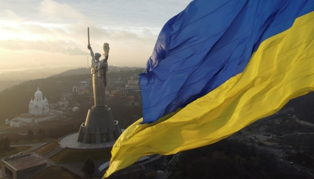

-
text...
- text...
-
text...
- text...
- text...
- text...
- text...
- text...
- text...
- text...

Ukraine is an independent country in Eastern Europe, known for its rich history, cultural heritage, fertile land, and the unbreakable spirit of its people. The capital of Ukraine is Kyiv, one of the oldest cities in Europe and the country's spiritual and cultural center.
History and Heritage
Ukraine has a history spanning more than a thousand years. It was here that Kyivan Rus, a powerful medieval state that laid the foundation for the development of Eastern Europe, was established. Throughout the centuries, the Ukrainian people fought for their freedom and identity, enduring periods of foreign rule, revolutions, and wars. In 1991, Ukraine regained its independence and has been confidently building its future ever since.
Nature and Natural Resources
Ukraine is often called the "Breadbasket of Europe" because its black soil is among the most fertile in the world. The majestic Carpathian Mountains, endless fields, rivers, lakes, and picturesque steppes create breathtaking natural landscapes. The country's longest river is the Dnipro. Other remarkable places include Lake Svityaz, Sofiyivka Park, numerous nature reserves, and national parks that showcase Ukraine's rich biodiversity.
Culture and Traditions
Ukrainian culture is vibrant, profound, and diverse. Folk songs, embroidered shirts (vyshyvankas), the Hopak dance, pysanky (decorated Easter eggs), and traditional customs are all an integral part of the nation's identity. The Ukrainian language is melodic and expressive and is considered one of the most beautiful-sounding languages in the world.
Ukraine has given the world many outstanding figures, from Taras Shevchenko and Lesya Ukrainka to modern artists, scientists, and athletes.
The Resilience of the People
Recent years have become a great challenge for the country due to Russia's aggression, the war, and the ongoing fight for freedom and democracy. Nevertheless, Ukrainians have shown the world what true courage, unity, and love for their homeland mean. Despite all the hardships, the nation remains strong, united, and determined.
The Future of Ukraine
Ukraine continues its path toward European integration, reforms, and sustainable development. The younger generation believes in a brighter future, strives for positive change, and works to build a modern, secure, and prosperous country.
Ukraine is more than just a country on the map. It is a soul, a song, a struggle, and freedom. It is love for the land, the language, and traditions. It is our pride.